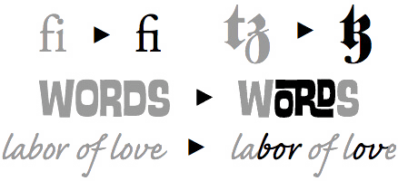

Vertical writing on the web
Inadvertent layout inspiration from a search for cultural identity
What does the web mean to you?


“For the Web, the external link is what would allow it to actually become ‘worldwide’.”🔗
—Sir Tim Berners-Lee


Sources: Worldometers, Ethnologue, W3Techs
Internationalisation (i18n)
“To ensure that the technology supports text in any writing system of the world.”
—W3C Internationalisation
هانق تواه هو محارب وبحار ملايوي من ملاكا عاش في عهد حكم السلطان منصور شاه في القرن الخامس عشر الميلادي، وكان واحداً من أقدر أميرالات السلطان الذين يسمون لكسامانا إلى جانب هانق كاستوري ، وهانق ليكيو، وهانق ليكير، وهانق جيبات.
从前，在马来西亚的西海岸边上，住着一个叫左汉的渔夫，他每天早出晚归出海捕鱼，卖鱼的钱除了吃饭、穿衣等必需的日常开销外，剩下的就不多了。左汉对辛辛苦苦的捕鱼生活很不满意，一心只想着发财。可是，左汉心里明白：靠捕鱼，自己是永远不会成为富翁的。
မိုးလင်းကတည်းကပင် ကောင်းကင်သည် အုံ့မှိုင်း ညို့မှုန်လျက်ရှိသည်။ တိမ်တိုက်ဟူ၍ ဘာမှကြည်လင်စွာမမြင်ရ။ မိုးကိုကြည့်ရသည်မှာ မြူသန်းနေသော ပင်လယ်ပြင်ကြီးလို ဝိုးဝိုးဝါးဝါးနေသည်။ မိုးသည် ကင်းကင်းလွတ်လွတ်စဲသည် ဟူ၍မရှိ၊ တဖွဲဖွဲ ဖွဲနေလိုက်၊ တဖြိုင်ဖြိုင်ရွာချလိုက်နှင့်၊ နောက် စွေ၍ နေလေသည်။
ลิลิตพระลอเป็นเรื่องความรักที่มีอนุภาพรุนแรงยิ่ง จนแม้ชีวิตก็ยอมพลีให้แก่กัน เนื้อเรื่องกล่าวถึงเมืองสองเมือง คือ เมืองสรอง กับเมืองสรวงเป็นศัตรูกัน เจ้าเมืองสรวงได้ฆ่าเจ้าเมืองสรองตายในสนามรบ พระชายาเจ้าเมืองสรองมีความแค้นเจ้าเมืองสรวงอย่างยิ่ง
ຄັນເມື່ອຄວາຍຕົວນັນຕາຍໄປແລ້ວຂຸນທັງສອງຈຶ່ງຝັງມັນໄວ້ທີ່ຫົວນາ ຕໍ່ມາຈຶ່ງມີເຄືອຫມາກນໍ້າເຕົ້າສອງເຄືອ ເກີດມາຈາກຮູດັງຄວາຍແລ້ວກໍ່ມີຫມາກນໍ້າເຕົ້າໃຫຍ່ສອງ ຫນ່ວຍ ເມື່ອຫມາກນໍ້າເຕົ້າໃຫຍ່ສອງຫນ່ວຍນັ້ນແກ່ແຫ້ງແລ້ວ ກໍ່ເລີຍໄດ້ຍິນສຽງຄົນ ຮ້ອງຊວ່າ ແຊວຢູ່ໃນຫມາກນໍ້າເຕົ້າຫນ່ວຍກົກ.
អាចោរនោះថា «បងស្រលាញ់ស្មោះហើយនាងពុំដឹងចិត្តបងចង់អោយបងស្បថ រឺអោយបងធ្វើម្ដេច ? » ។ មេនោះថា «បើស្រលាញ់ចិត្តមួយនឹងគ្នា មានតែលិទ្ធអណ្ដាតគ្នា » ទើបមេនោះលៀនអណ្ដាតហើយអោនទៅរកអាចោរនោះ។
Chẳng là xƣa nay bọn mình chƣa viết chung thƣ bao giờ. Cho nên cuối cùng phải thỏa thuận với nhau là cứ viết riêng thôi. Nhƣng lại xảy ra chuyện tranh cãi là để ai viết trƣớc bây giờ. Đành rút thăm vậy. Kết quả là mình trúng đầu tiên.
Isa pang round at nagka-ayawan na pagka 11:00 na halos ng gabi. Namahagi si Manuel ng kaunting balato at ang natirang malinis niyang pinanalunan ay P700 na kanyang ibinukod habang matuling tumatakbo ang taksi na patungo sa kanyang inuuwian.
生命對幾米來說，剛開始像「接龍」，有了這一張牌，才能找到下一張牌，他在罹患血癌之後，靠一本本創作，才能維繫生命絲線。他作品呈現的「童真的憂鬱」，帶給讀者深深的共鳴。功成名就的幾米也越來越自信從容，但他說：「外面的虛浮都是假的，空洞的，只有當我的手握著筆，埋頭工作的時候，我才是最堅強。」
Do developers even care about typography?
“Web design is 95% typography”
—Oliver Reichenstein
“Typography is writing with prefabricated letters”
—Gerrit Noordzij
Phoenician alphabet
甲骨文
Hippopotamus
(English) 12 letters
河马
Lebensgefährte
(German) 14 letters
伴侣
Grianghrafadóireachta
(Irish) 21 letters
摄影


The web is a unique medium of its own
Web fonts
The CSS3 Fonts specification describes the basic controls CSS provides for selecting and using fonts within documents.

What is a font?


And what are glyphs?


Font formats for web use
| WOFF2 (Web Open Font Format 2) |


|
| WOFF (Web Open Font Format) |
|
| OTF (OpenType) |

|
| TTF (TrueType) |

|
| EOT (Embedded Open Type) |
|
| SVG (Scalable Vector Graphics) |

|
@font-face
@font-face {
font-family: 'Inria Sans';
src: url('inriasans-regular.woff2') format('woff2'),
url('inriasans-regular.woff') format('woff');
}Anatomy of an @font-face rule
@font-face {
font-family: <family-name>;
src: [ <url> [format(<string> #)]? | <font-face-name> ] #;
font-style: normal | italic | oblique ;
font-weight: normal | bold | 100 | 200 | 300 | 400 | 500 | 600 | 700 | 800 | 900;
font-stretch: normal | ultra-condensed | extra-condensed | condensed | semi-condensed | semi-expanded | expanded | extra-expanded | ultra-expanded;
unicode-range: <urange> #;
font-variant: normal | none | [ <common-lig-values> || <discretionary-lig-values> || <historical-lig-values> || <contextual-alt-values> || stylistic(<feature-value-name>) || historical-forms || styleset(<feature-value-name> #) || character-variant(<feature-value-name> #) || swash(<feature-value-name>) || ornaments(<feature-value-name>) || annotation(<feature-value-name>) || [ small-caps | all-small-caps | petite-caps | all-petite-caps | unicase | titling-caps ] || <numeric-figure-values> || <numeric-spacing-values> || <numeric-fraction-values> || ordinal || slashed-zero || <east-asian-variant-values> || <east-asian-width-values> || ruby ];
font-feature-settings: normal | <feature-tag-value> #;
}@font-face {
font-family: 'Heiti Plus';
src: local('Heiti SC');
/* no range specified, defaults to entire range */
}
@font-face {
font-family: 'Heiti Plus';
src: url('fonts/andikanewbasic-r.woff2') format('woff2'),
url('fonts/andikanewbasic-r.woff') format('woff');
unicode-range: U+0-2FF; /* Unicode range for Latin characters */
}Basic CSS font properties
font-size |
Indicates the desired height of the glyphs. Takes absolute or relative values. |
font-weight |
Specifies the weight of the glyphs in the font. Can use keywords or numerical values. |
font-style |
Allows italic or oblique faces to be selected. |
font-stretch |
Selects a normal, condensed or expanded face from a font family. Range spans over 9 keywords. |
font-size-adjust |
Adjusts the font-size to preserve the x-height of the first choice font. |
font-synthesis |
Controls whether user agents are allowed to synthesize bold or oblique font faces when missing. |
font-size-adjust

See the Pen Demo of font-size-adjust by Chen Hui Jing (@huijing) on CodePen.
font-synthesis

Font feature properties
font-kerning

|
font-variant-position

|
font-variant-position-ligatures

|
font-variant-numeric

|
font-variant-caps

|
font-variant-alternates

|
font-variant-east-asian

font-feature-settings
Provides low-level control of advanced OpenType features
- aalt
- abvf
- abvm
- abvs
- afrc
- akhn
- blwf
- blwm
- blws
- calt
- case
- ccmp
- cfar
- cjct
- clig
- cpct
- cpsp
- cswh
- curs
- cv01-cv99
- c2pc
- c2sc
- dist
- dlig
- dnom
- dtls
- expt
- falt
- fin2
- fin3
- fina
- flac
- frac
- fwid
- half
- haln
- halt
- hist
- hkna
- hlig
- hngl
- hojo
- hwid
- init
- isol
- ital
- jalt
- jp78
- jp83
- jp90
- jp04
- kern
- lfbd
- liga
- ljmo
- lnum
- locl
- ltra
- ltrm
- mark
- med2
- medi
- mgrk
- mkmk
- mset
- nalt
- nlck
- nukt
- numr
- onum
- opbd
- ordn
- ornm
- palt
- pcap
- pkna
- pnum
- pref
- pres
- pstf
- psts
- pwid
- qwid
- rand
- rclt
- rkrf
- rlig
- rphf
- rtbd
- rtla
- rtlm
- ruby
- rvrn
- salt
- sinf
- size
- smcp
- smpl
- ss01
- ss02
- ss03
- ss04
- ss05
- ss06
- ss07
- ss08
- ss09
- ss10
- ss11
- ss12
- ss13
- ss14
- ss15
- ss16
- ss17
- ss18
- ss19
- ss20
- ssty
- stch
- subs
- sups
- swsh
- titl
- tjmo
- tnam
- tnum
- trad
- twid
- unic
- valt
- vatu
- vert
- vhal
- vjmo
- vkna
- vkrn
- vpal
- vrt2
- vrtr
- zero
Variable fonts

| CSS property |
Tag | Name |
Description |
|---|---|---|---|
font-weight |
'wght' | Weight | Used to vary stroke thicknesses to give variation from lighter to blacker. |
font-style |
'slnt' | Slant | Used to vary between upright and slanted text. |
| 'ital' | Italic | Used to vary between non-italic and italic. | |
font-stretch |
'wdth' | Width | Used to vary width of text from narrower to wider. |
font-optical-sizing |
'opsz' | Optical size |
Used to vary design to suit different text sizes. |
font-variation-settings
Provides low-level control over OpenType or TrueType font variations
The magic of Writing Modes
CSS Writing Modes Level 3 defines CSS features to support for various international writing modes, such as left-to-right (e.g. Latin or Indic), right-to-left (e.g. Hebrew or Arabic), bidirectional (e.g. mixed Latin and Arabic) and vertical (e.g. Asian scripts).
You can make your browser literally turn on its side from left-to-right.
🙃Or make it read from right-to-left.
🙂Vertical text is fun!
writing-mode property
| horizontal-tb | 从1987到现在 |
| vertical-rl | 从1987到现在 |
| vertical-lr | 从1987到现在 |
| sideways-rl* | 从1987到现在 |
| sideways-lr* | 从1987到现在 |